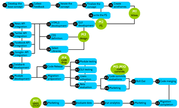
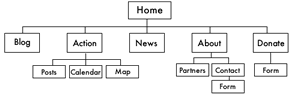
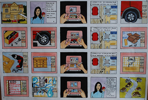

This image shows a mind map. Categorizing terms and drawing connections between them helps you see how any project (interactive or not) piece relates to another. Very helpful as an initial brain dump!
This image shows a mind map. Categorizing terms and drawing connections between them helps you see how any project (interactive or not) piece relates to another. Very helpful as an initial brain dump!
 This image shows a webpage layout and a video interface. It’s a basic wireframe of how content might be presented on the page. In fact, this was the very first wireframe for the StoryCamp Cinema page.
This image shows a webpage layout and a video interface. It’s a basic wireframe of how content might be presented on the page. In fact, this was the very first wireframe for the StoryCamp Cinema page.
This image shows a phase plan for a web project. It shows which tasks are reliant on others and what can be completed in tandum.
Free Tools for Schematics and Storyboarding
There are tons of different collaborative flowcharting, wireframing and schematic making programs that are free and fairly intuitive to use. It might take some trial and error to find one that you like, but here are some examples of online apps that people at Mozilla use:
Schematics: Be open to your creativity
There’s no one way to organize information or a right way to create a schematic. You just have to think about how a user will experience your story. Where do they go first? What do they do there? What do they see and hear? Where could they go next? How do YOU draw that out so that you can both understand it and help others understand your vision?
 The image above shows the most basic schematic for websites. It is simply
showing the hierarchy of pages. In the sidebar are a couple of other types of schematics from various real world projects. Notice how they are different, notice how they are the same.
Each drawing represents the creators thought process in how her project should be structured to meet her vision. These are very basic drawings, but they can become as complex as you need them to be. Schematics can be incredibly helpful when figuring out your ideas and when explaining an overarching concept to people.
Storyboards: Sequencing For the Win
A Storyboard shows each scene of a story in sequential order. They can be detailed down to the nanosecond or they can serve as a rough outline for how the story is going to visually unfold. Laying out the story this way will help you keep focus. You can also add a layer on top to indicate user interactions or additional information you’d like to bring into the story.
Animatics are Storyboards laid out on a timeline. Chris Milk created a very cool Animatic for the Wilderness Downtown, and we recommend checking it out.
Storyboards, like everything we do to plan and prepare a project, usually go through a series of iterations. Your initial Storyboard might very well be a scribble on a scrap of paper (what we refer to as a “napkin sketch”).
Make Both!
Both Schematics and Storyboards can be as complicated as you need them to be. Remember, there’s no right way to do it, no single solution, but creating schematics and storyboards will help you focus on and iterate your Story, Vision and Tech.